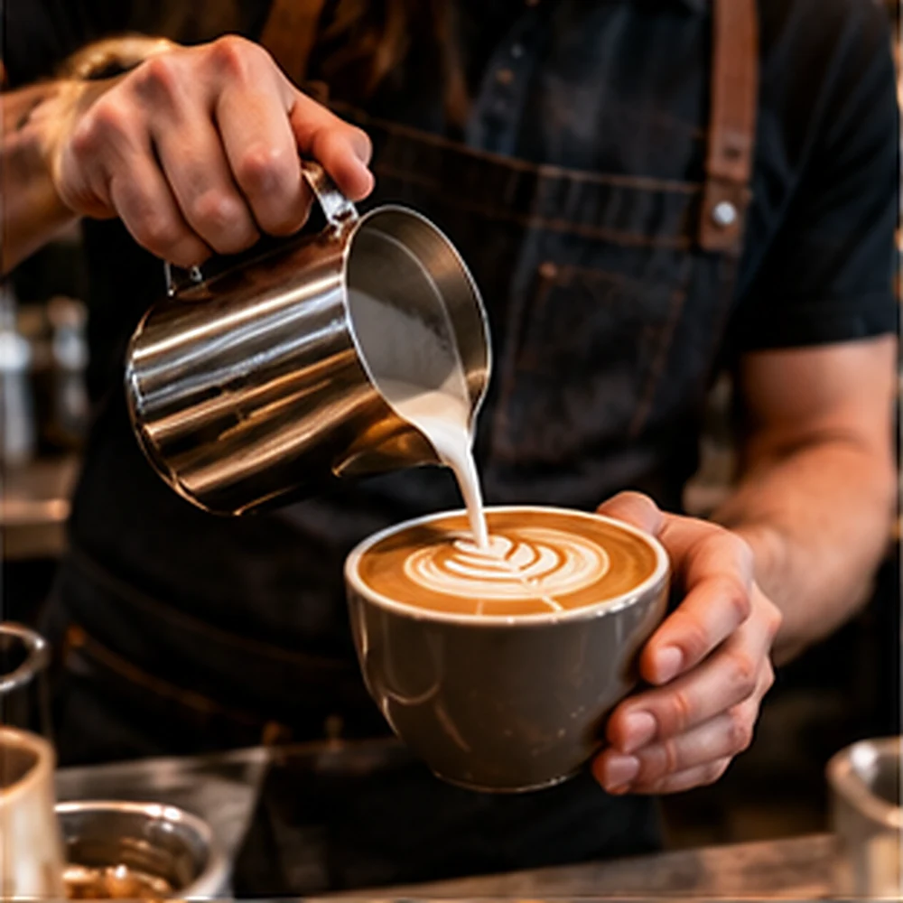
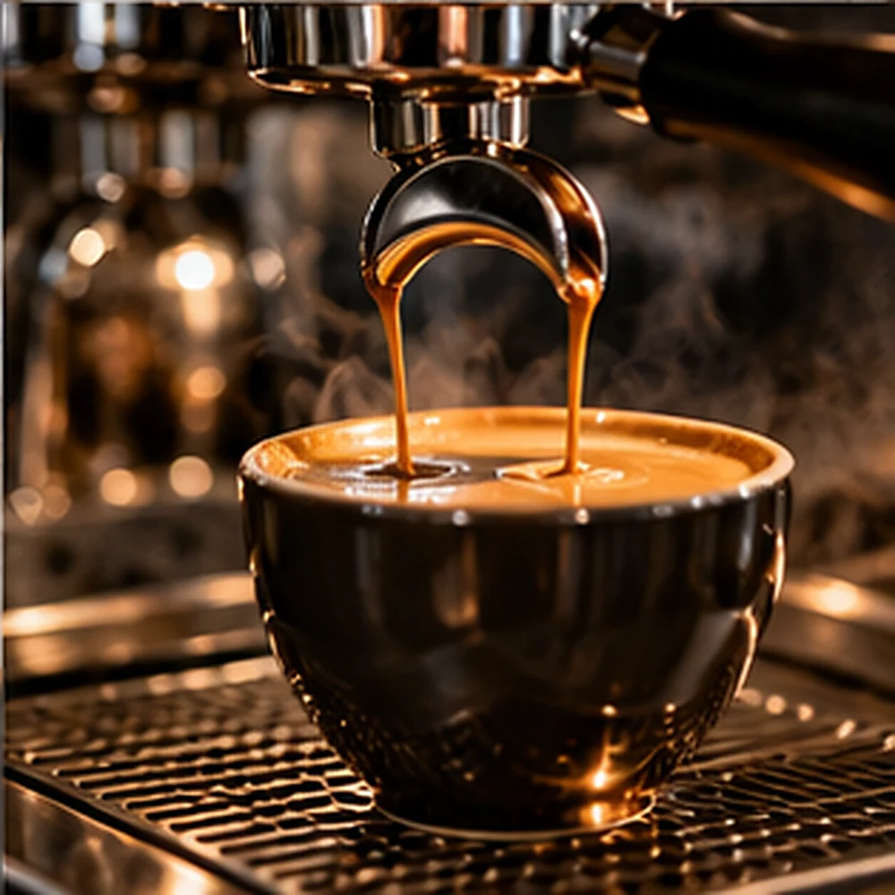

Espresso & classics
The familiar favourites, crafted with care.
SLOW DOWN. SIP WELL.
Coffee brewed with intention. Bakes made for sharing. Time that feels like yours.

01 / Our Coffee
Discover the thoughtful presentation of services and experiences for this business concept.
The familiar favourites, crafted with care.
A little more time to appreciate every note.
Warm pastries and small moments of joy.
Demonstration content only. Offerings and availability are fictional.
CURATED / EXPERIENCE

A compact café menu encourages exploration before a visit.
02 / Menu
A warm, welcoming place designed around exceptional everyday coffee.
03 / THE IDEA
Designed for this industry's real information needs: clear navigation, meaningful visual hierarchy and simple customer enquiries.
The website combines an original brand identity with an intuitive visitor journey. Every element is illustrative until adapted for a real business.
YOUR NEXT STEP
This demonstration is fictional and does not accept real requests.